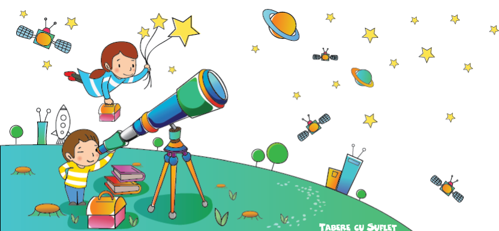

Cine suntem?
Tabere cu Suflet este o Asociatie Nonprofit ce are la baza un proiect CSR al TeamXpert. Proiectul nascut din dorinta de a ajuta, precum si din pasiunea pentru activitati in natura si pentru copii, a demarat in 2008 cu primele Tabere de Schi! Ted si Sara sunt copiii care au dat numele si sufletul proiectului:)
Asociatia Tabere cu Suflet
Asociatia Nonprofit Tabere cu Suflet, avand ca obiectiv dezvoltarea si implementarea de activitati pentru copii si adulti, a luat fiinta in 2012. Cu timpul s-a creat in jurul Asociatiei o adevarata comunitate, formata din copii si adulti care participa activ la Tabere, Competitii, Weekenduri Active si alte Activitati ale Asociatiei.
Echipa Tabere cu Suflet
Echipa Tabere cu Suflet este formata din instructori si educatori specializati in programe pentru copii, cu o experienta aplicata de peste 25 de ani. Instructorii Tabere cu Suflet sunt certificati de Ministerul Educatiei Nationale si de Ministerul Muncii, Familiei si Protectiei Sociale, precum si de asociatii internationale de prestigiu, cum ar fi Asociatia Austriaca de Alpinism (ÖAV) sau Asociatia Internationala a Instructorilor de Schi (ISIA).
Familia Tabere cu Suflet
Organizam activitati pentru copii de mai bine de 10 ani si multi dintre copii au venit an de an, crescand practic sub ochii nostri!
Sunt peste 5000 de copii care au participat, de-a lungul timpului, la Taberele, Competitiile si Weekendurile Active pe care le organizam. Si, spre bucuria noastra, majoritatea a tot revenit:)
Sunt bine veniti in Familia noastra toti cei care ne impartasesc Valorile:)
Valorile Tabere cu Suflet
Viziunea noastre este cea a unei Lumi mai Buna, bazata pe Umanitate si Compasiune pentru cei din jur! Menirea noastra este sa impartasim acesta Viziune si sa construim impreuna Lumea mai Buna, cu speranta ca puterea exemplului poate schimba oamenii! De aceea am creat programul WeCare, prin care sprijinim pe toti cei aflati in nevoie, care ne cer ajutorul.